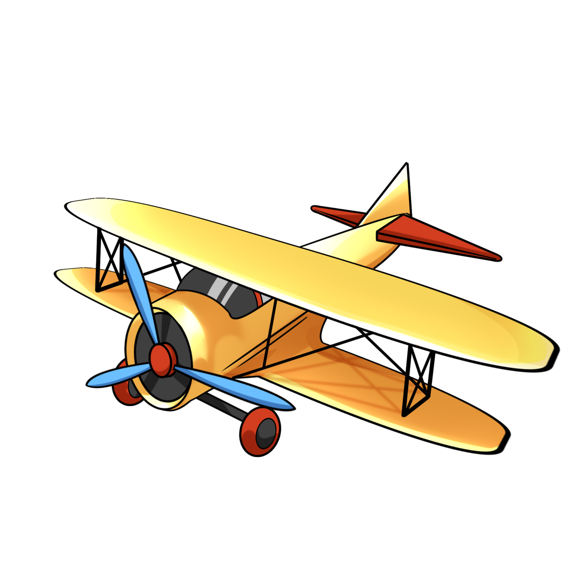
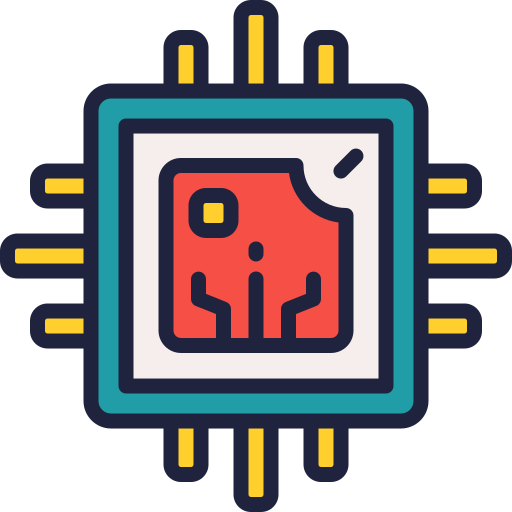
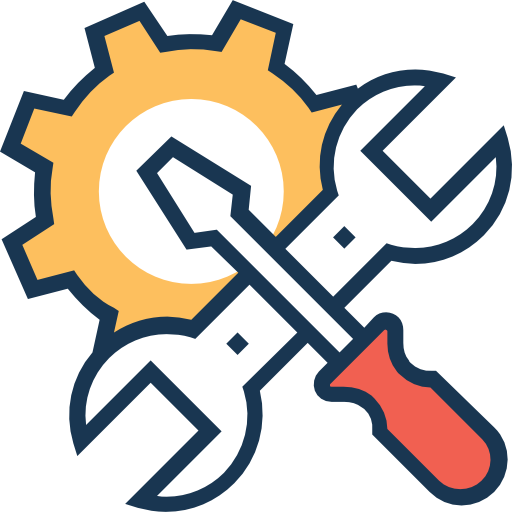
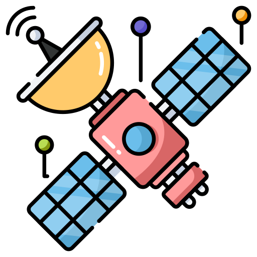
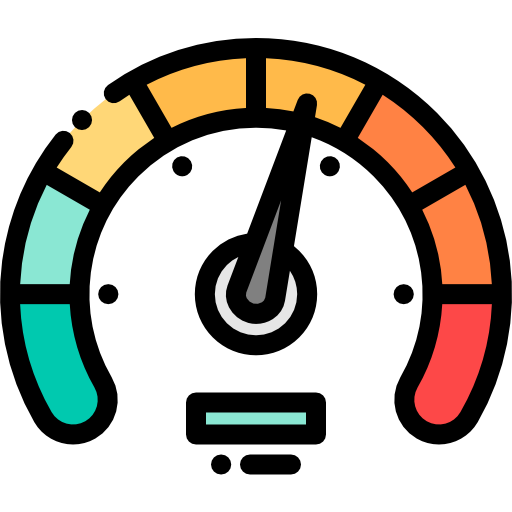
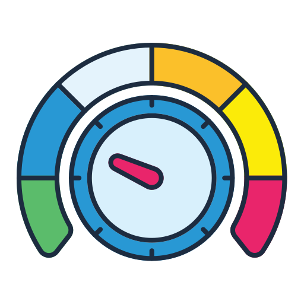
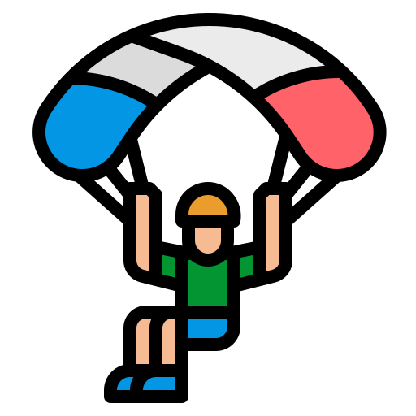
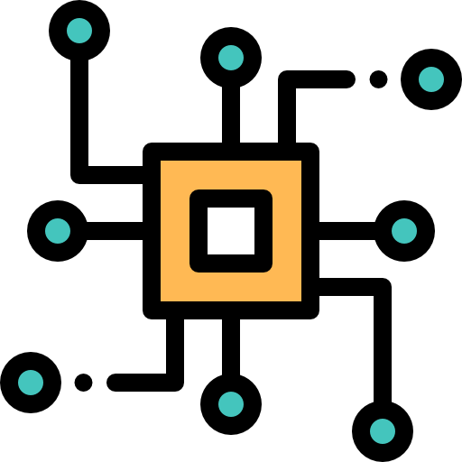
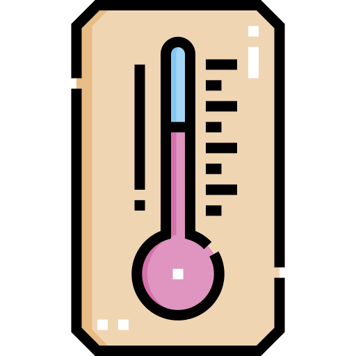
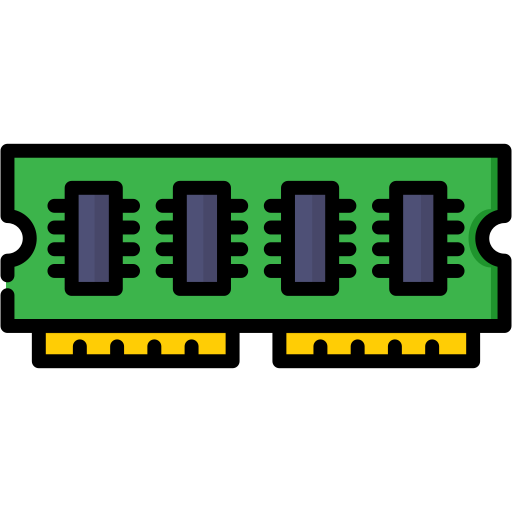

Vecihi Configurator

Uygulamayı kullanmak için lütfen cihazınıza enerji verdikten sonra ilk 10 saniye içerisinde seri porta bağlayın. Aksi takdirde uçuş moduna geçecektir.
Dokümantasyon ve örnek videolara buradan hızlıca ulaşabilirsiniz.







Her eksen için mikser oranını ayarlayın. 100 = normal, -100 = ters, 50 = %50 güç. Yaw tersleniyorsa Yaw değerini negatif yapın (örn: -100).
Veri bekleniyor... Bağlantıyı kontrol edin.
Henüz waypoint eklenmedi.
Haritaya tıklayın.
Web Serial API gerektirir. Chrome/Edge tarayıcı kullanın.